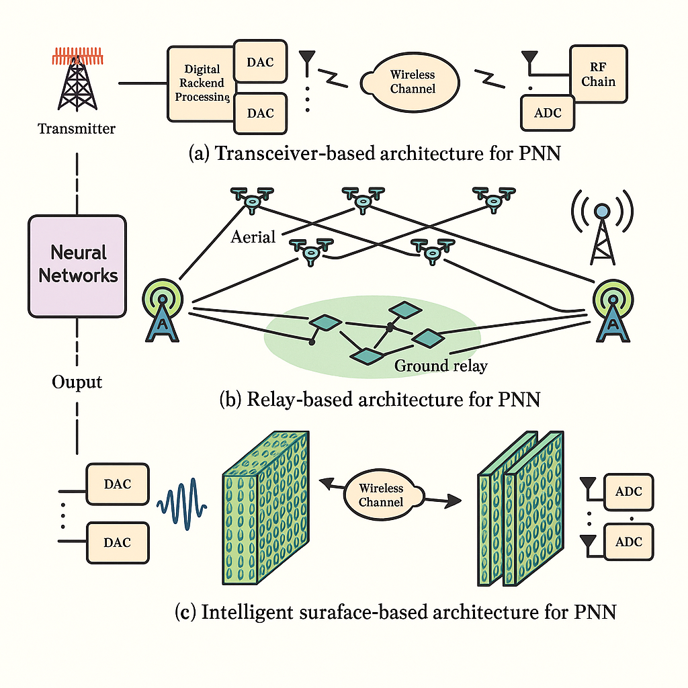
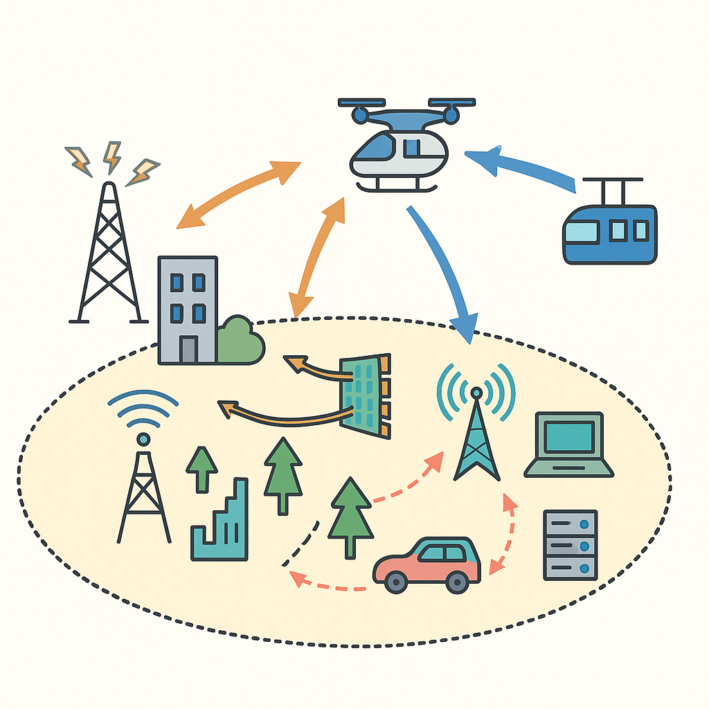
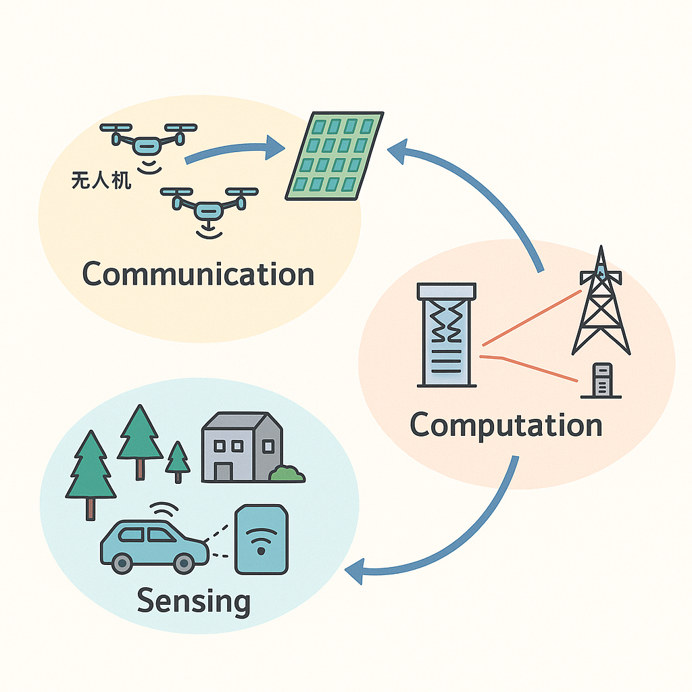

Large AI Models for Communication
|
|
Large AI Models leverage foundation models to enhance the reliability, efficiency, and intelligence of next-generation wireless systems.
By learning semantic structures and task-oriented features, they enable semantic communication, token-level transmission, and robust reconstruction under noisy channels.
These models can assist in channel prediction, resource allocation, user behavior modeling, and intelligent decision-making across complex networks.
They also support multimodal communication frameworks, where text, images, and sensing data are transmitted and interpreted at a semantic level.
Together, large AI models pave the way for communication systems that are more adaptive, resilient, and deeply integrated with AI-native functionalities.
|
M. Hua, W. Zhang, C. Bian, and D. Gunduz, “In-Context Learning for Deep Joint Source-Channel Coding Over MIMO Channels”, [arXiv preprint arXiv:2512.01567, 2025].
Phsyical Neural Networks
|
 |
Physical Neural Networks (PNNs) exploit the inherent dynamics of wireless transceivers, relays, and intelligent surfaces to perform neural computation directly in the physical domain.
By mapping neural operations onto propagation, reflection, and modulation processes, PNNs enable ultra-fast, energy-efficient inference without relying solely on digital processors.
Transceiver-, relay-, and intelligent-surface–based architectures provide flexible substrates for realizing large-scale analog computation in real environments.
These physically embedded neural models open a new pathway toward scalable, low-power, and hardware-efficient AI for next-generation communication and sensing systems.
|
M. Hua, C. Bian, H. Wu, and D. Gunduz, “Implementing Neural Networks Over-the-Air via Reconfigurable Intelligent Surfaces”, IEEE Global Communications Conference (GLOBECOM) , Taipei, Taiwan, 2025.
M. Hua, H. Wu, and D. Gunduz, “AirCNN via Reconfigurable Intelligent Surfaces: Architecture Design and Implementation”, [arXiv preprint arXiv:2510.25389, 2025].
M. Hua, C. Bian, H. Wu, and D. Gunduz, “Implementing Neural Networks Over-the-Air via Reconfigurable Intelligent Surfaces”, [arXiv preprint arXiv:2508.01840, 2025].
UAV-assisted Communication, Sensing, and Computation
|
 |
UAV-assisted Communication, Sensing, and Computation explores how UAVs enhance next-generation wireless networks and low-altitude intelligent IoT.
By acting as agile aerial base stations and air buses, UAVs provide flexible coverage, rapid connectivity restoration, and on-demand data relay.
They also serve as powerful aerial sensing platforms capable of high-resolution environment perception and cooperative situational awareness.
Furthermore, UAV-borne edge computation enables real-time processing, task offloading, and intelligent decision-making in dynamic 3D network environments.
|
M. Hua, L. Yang, C. Li, Q. Wu, A. L. Swindlehurst, ‘‘Throughput Maximization for UAV-aided Backscatter Communication Networks,’’ IEEE Transactions on Communications , vol. 68, no. 2, pp. 1254-1270, Feb. 2020.
M. Hua, L. Yang, Q. Wu, and A. L. Swindlehurst, ‘‘3D UAV Trajectory and Communication Design for Simultaneous Uplink and Downlink Transmission,’’ IEEE Transactions on Communications , vol. 68, no. 9, pp. 5908-5923, Sept. 2020.
M. Hua, Y. Wang, Q. Wu, H. Dai, Y. Huang and L. Yang, ‘‘Energy-Efficient Cooperative Secure Transmission in Multi-UAV-Enabled Wireless Networks,’’
IEEE Transactions on Vehicular Technology , vol. 68, no. 8, pp. 7761-7775, Aug. 2019.
M. Hua, Y. Wang, C. Li, Y. Huang, and L. Yang, ‘‘UAV-aided Mobile Edge Computing Systems with One by One Access Scheme,’’
IEEE Transactions on Green Communications and Networking , vol. 3, no. 3, pp. 664-678, Sept. 2019.
M. Hua, L. Yang, C. Pan, and A. Nallanathan, “Throughput Maximization for Full-Duplex UAV Aided Small Cell Wireless Systems,” IEEE Wireless Communications Letters , vol. 9, no. 4, pp. 475-479, April 2020.
M. Hua, Y. Wang, C. Li, Y. Huang, and L. Yang, “Energy-Efficient Optimization for UAV-Aided Cellular Offloading,” IEEE Wireless Communications Letters , vol. 8, no. 3, pp. 769-772, June 2019.
M. Hua, Y. Wang, Z. Zhang, C. Li, Y. Huang, and L. Yang, “Power-Efficient Communication in UAV-Aided Wireless Sensor Networks,” IEEE Communications Letters , vol. 22, no. 6, pp. 1264-1267, June 2018.
IRS/RIS-assisted Communication, Sensing, and Computation
|
 |
RIS-assisted Communication, Sensing, and Computation leverages RIS to shape wireless propagation and create controllable, energy-efficient environments.
By dynamically tuning reflection patterns, RIS enhances communication coverage, boosts link reliability, and supports low-altitude intelligent networking.
Integrated with sensing functions, RIS enables high-resolution environmental perception and joint communication–sensing capabilities.
Furthermore, RIS-aided edge computation facilitates efficient task offloading and cooperative processing across large-scale intelligent networks.
|
B. Lyu, H. Liu, M. Hua, W. Hong, S. Gong, F. Tian, and A. Jamalipour, ‘‘Robust Transmission Design for Reconfigurable Intelligent Surface and Movable Antenna Enabled Symbiotic Radio Communications,’’ IEEE Transactions on Wireless Communications , early access, doi: 10.1109/TWC.2025.3592655. (Corresponding author)
M. Hua, G. Chen, K. Meng, S. Ma, C. Yuen, and H. C. So, ‘‘3D Multi-Target Localization Via Intelligent Reflecting Surface: Protocol and Analysis,’’ IEEE Transactions on Wireless Communications , early access, doi: 10.1109/TWC.2024.3442563, 2024.
M. Hua, Q. Wu, W. Chen, O. A. Dobre, and A. L. Swindlehurst, ‘‘Secure Intelligent Reflecting Surface Aided Integrated Sensing and Communication,’’
IEEE Transactions on Wireless Communications , vol. 23, no. 1, pp. 575-591, Jan. 2024. [*ESI Highly Cited Paper + ESI Hot Paper*]
M. Hua, Q. Wu, W. Chen, Z. Fei, H. C. So, and C. Yuen, “Intelligent reflecting surface assisted localization: Performance analysis and algorithm design,”
IEEE Wireless Communications Letters , 2023, early access, doi: 10.1109/LWC.2023.3320728. [*ESI Highly Cited Paper*]
M. Hua, Q. Wu, C. He, S. Ma, and W. Chen, ‘‘Joint Active and Passive Beamforming Design for IRS-Aided Radar-Communication,’’ IEEE Transactions on Wireless Communications , vol. 22, no. 4, pp. 2278-2294, April 2023. [*ESI Highly Cited Paper*]
M. Hua, Q. Wu, L. Yang, R. Schober, and H. V. Poor, ‘‘A Novel Wireless Communication Paradigm for Intelligent Reflecting Surface Based Symbiotic Radio Systems,’’
IEEE Transactions on Signal Processing , vol. 70, pp. 550-565, 2022.
M. Hua, Q. Wu, ‘‘Throughput Maximization for IRS-Aided MIMO FD-WPCN with Non-Linear EH Model’’,
IEEE Journal of Selected Topics in Signal Processing , vol. 16, no. 5, pp. 918-932, Aug. 2022.
M. Hua, Q. Wu, ‘‘Joint Dynamic Passive Beamforming and Resource Allocation for IRS-Aided Full-Duplex WPCN,’’ IEEE Transactions on Wireless Communications , vol. 21, no. 7, pp. 4829-4843, July 2022.
M. Hua, Q. Wu, and H. V. Poor, ‘‘Power-Efficient Passive Beamforming and Resource Allocation for IRS-Aided WPCNs,’’ IEEE Transactions on Communications , vol. 70, no. 5, pp. 3250-3265, May 2022.
M. Huaa, Q. Wu, D.W.K. Ng, J. Zhao, L. Yang, ‘‘Intelligent Reflecting Surface Aided Joint Processing Coordinated Multipoint Transmission,’’ IEEE Transactions on Communications , vol. 69, no. 3, pp. 1650-1665, March 2021.
|